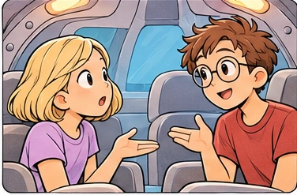
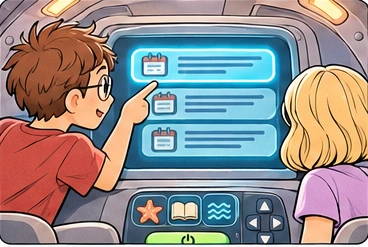
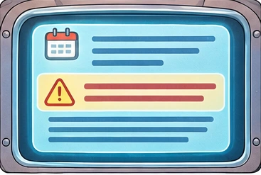

Chapter 5 · Part 1 — Two Eyes
“What’s a ship’s log?” said Annie.
“It’s a diary of an trip,” said Jack.

He peered at the computer screen and read a log entry:
MONDAY, JULY 5

“Hey, that was just last week,” said Jack. He read further:
COLLECTED ROCK AND SHELL SAMPLES
MAPPED FLOOR
FOUND TINY IN HULL

“This is like your ,” said Annie.
“Yeah, the oceanographer was writing notes on the computer,” said Jack.
Jack and Annie read further:
TUESDAY, JULY 6
HAS WIDENED
MUST RETURN TO SOON
“A where?” said Annie.
“I don’t know,” said Jack. He read further:
WEDNESDAY, JULY 7
MORE TINY CRACKS
CANNOT BE FIXED
HEADING BACK TO TODAY
“Uh-oh. This doesn’t sound good,” said Jack. He read further:
THURSDAY, JULY 8
DEFECTIVE SUB
RETURN TO
LEAVE FOR HELICOPTER TO TRANSPORT
TO JUNKYARD
“ ‘Defective’ means broken, right?” said Annie.
“Yep,” said Jack.
“So this sub is broken, right?” said Annie.
“Yep,” said Jack. “And it was waiting to be taken away by a helicopter. To a junkyard.”
“Yikes,” said Annie.
“Now we really have to get back,” said Jack.
“Let’s try pressing the waves picture,” said Annie.
She pressed the waves picture on the computer screen.
The began to rise slowly.
“Oh, good,” said Jack.
The sub went past a small mountain. It went past schools of fish and waving plants.
“Oh!” gasped Annie.
Jack gasped, too.
Two eyes were staring out from behind a giant sea plant. They looked human—except they were as big as golf balls.
The sub moved past the giant plant. Jack breathed a sigh of relief.
“What—? Whose—?” sputtered Annie.
“Don’t ask,” said Jack.
They back at the plant.
Just then, a long arm came out from behind it.
Then another arm came out.
Then another—and another—and another—and another—and another—and another!
Jack and Annie in horror at a giant .
“It’s coming after us,” said Annie.
Slowly, the crept through the water. Its eight arms reached for the .